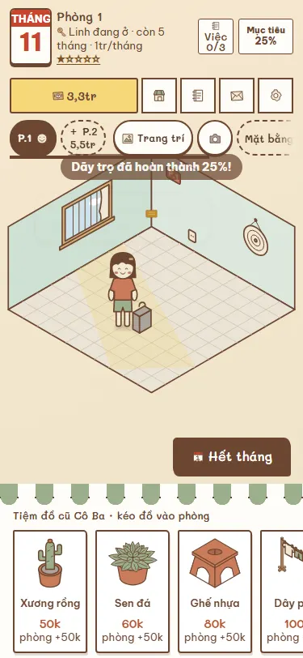
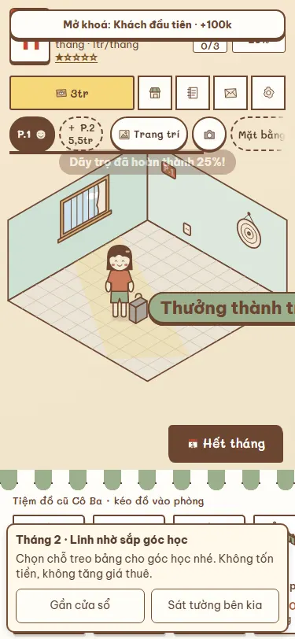
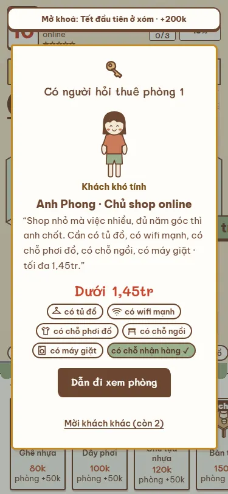
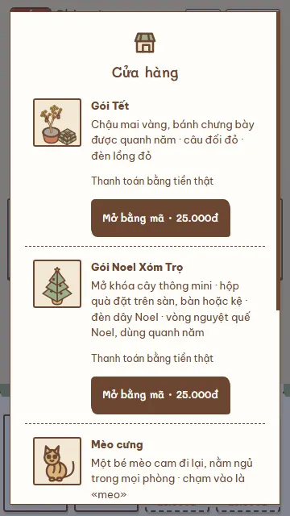

Game quản lý phòng trọ
Dãy Trọ Của Tôi
Nhận một phòng cũ, quét sạch bụi rồi bày chiếc giường đầu tiên. Từ căn phòng nhỏ ấy, bạn tự tay gây dựng một dãy trọ đông vui.
Chơi ngayBa tháng đầu trong game miễn phí · Bản web đầy đủ 19.000đ

Bày căn phòng, nghe chuyện cả xóm
Làm chủ trọ cũng lắm chuyện: người cần góc học yên tĩnh, người muốn phòng sáng, người lại mặc cả tiền thuê. Dọn phòng, xếp đồ vừa ý khách rồi chờ người đầu tiên dọn đến.
Thích game trang trí phòng? Bạn có thể đổi màu tường, kê bàn, xếp giường và xoay đồ để dành một lối đi thật gọn. Mỗi phòng có một dáng vẻ riêng, rồi bạn khoe căn phòng ấy với bạn bè.
Thu tiền thuê, dành dụm mở thêm phòng. Khi đã quen việc, bạn còn có thể mở tiệm bánh hoặc quán trà sữa, thuê nhân viên và chăm chút góc quán của mình.
Đây là game chơi trên web không cần tải, nhẹ cho điện thoại. Mở bằng trình duyệt trên iPhone, Android hay máy tính là vào chơi; ván được lưu ngay trong trình duyệt đang dùng.



Câu hỏi thường gặp
Có cần tải app không?
Không cần. Bấm “Chơi ngay” để chơi trong trình duyệt. Bạn cũng có thể thêm game vào màn hình chính để mở lại cho tiện.
Game có miễn phí không?
Ba tháng đầu trong game được chơi miễn phí. Nếu muốn chơi tiếp, bản web đầy đủ giá 19.000đ, mua một lần. Các gói trang trí khác là lựa chọn riêng.
iPhone, Android và máy tính có chơi được không?
Có. Dùng trình duyệt trên iPhone, điện thoại Android hoặc máy tính. Giao diện tự vừa màn hình; trên điện thoại bạn chạm và kéo đồ.
Ván chơi có được lưu không?
Game tự lưu ván trong trình duyệt trên máy đang chơi. Mở lại đúng trình duyệt để chơi tiếp. Xoá dữ liệu trang hoặc dùng chế độ riêng tư có thể làm mất ván; ván không tự chuyển sang máy khác.
Ai làm game này?
Thảo, người làm game Việt ở Warm Jar Games. Dãy Trọ Của Tôi lấy cảm hứng từ những căn phòng trọ và câu chuyện đời thường ở xóm mình.